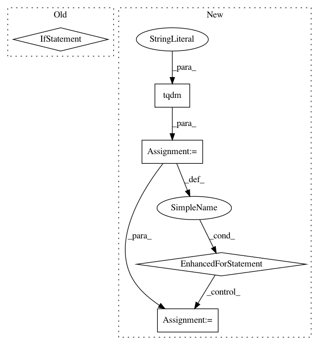

c17c92d84ec9216b781ecfbc25c6df225e2fd4f1,art/defences/preprocessor/audio_filter_pytorch.py,AudioFilterPyTorch,__call__,#AudioFilterPyTorch#Any#Any#,159
Before Change
import torch // lgtm [py/repeated-import]
x = torch.tensor(x, device=self._device)
if y is not None:
y = torch.tensor(y, device=self._device)
with torch.no_grad():
x, y = self.forward(x, y)
result = x.cpu().numpy()
After Change
x_preprocess = x.copy()
// Filter one input at a time
for i, x_preprocess_i in enumerate(tqdm(x_preprocess, desc="Apply audio filter", disable=not self.verbose)):
if np.min(x_preprocess_i) < -1.0 or np.max(x_preprocess_i) > 1.0:
raise ValueError(
"Audio signals must be normalized to the range `[-1.0, 1.0]` to apply the audio filter function."
)
x_preprocess_i = torch.tensor(x_preprocess_i, device=self._device)
with torch.no_grad():
x_preprocess_i, _ = self.forward(x_preprocess_i)
x_preprocess[i] = x_preprocess_i.cpu().numpy()
return x_preprocess, y
// Backward compatibility.
def estimate_gradient(self, x: np.ndarray, grad: np.ndarray) -> np.ndarray:
In pattern: SUPERPATTERN
Frequency: 4
Non-data size: 5
Instances
Project Name: IBM/adversarial-robustness-toolbox
Commit Name: c17c92d84ec9216b781ecfbc25c6df225e2fd4f1
Time: 2020-11-11
Author: M.N.Tran@ibm.com
File Name: art/defences/preprocessor/audio_filter_pytorch.py
Class Name: AudioFilterPyTorch
Method Name: __call__
Project Name: deepfakes/faceswap
Commit Name: 86ac59678486f4584b02dd561db826b903346e19
Time: 2021-03-18
Author: dmiszkiewicz@users.noreply.github.com
File Name: tools/sort/sort.py
Class Name: Sort
Method Name: sort_face_yaw
Project Name: deepfakes/faceswap
Commit Name: 9ebc0abc8e85a2fa722aaaf75f8c8793e95ea12f
Time: 2019-12-15
Author: 36920800+torzdf@users.noreply.github.com
File Name: tools/sort.py
Class Name: Sort
Method Name: sort_face
Project Name: deepfakes/faceswap
Commit Name: b1cfbe458c0bf123591348c54973d49297fd55ab
Time: 2021-02-14
Author: 36920800+torzdf@users.noreply.github.com
File Name: tools/alignments/jobs.py
Class Name: Rename
Method Name: _rename_faces